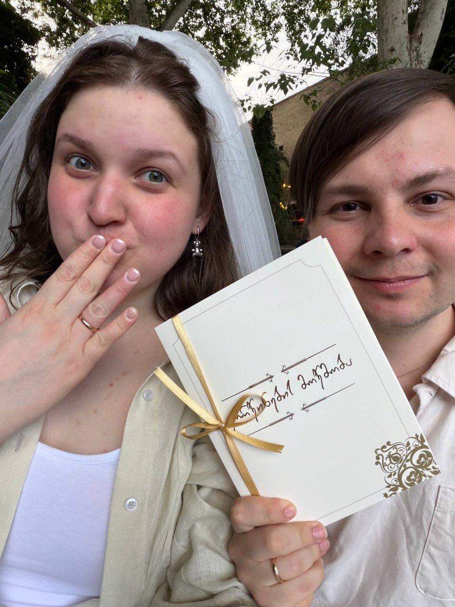

11 октября 2026
Воскресенье · Санкт-Петербург
12:00
Храм Анны Кашинской Большой Сампсониевский проспект, 53
13:00
До вечера есть время. Можно разъехаться по своим делам и встретиться уже на Восстания — а можно поехать с нами смотреть на город.
Автобус
Мы берем автобус и катаемся по городу — без программы, просто вместе. Он же довозит до места вечера, так что добираться потом не надо.
Отметьте в анкете, если хотите поехать.
15:00
«Амулет», Классический зал Улица Восстания, 35 — вход на углу дома
Ужин, ведущий и диджей. Столы небольшие, так что за вечер получится поговорить со всеми.
Спокойные светлые цвета — голубой, серо-голубой, теплый серый, приглушенная зелень. Без пестрого и крупных принтов.
Дальше как вам удобно: предписаний по длине и фасону у нас нет.
В храме — платок и закрытые плечи. Проще всего взять шарф с собой и снять его вечером.
21:00
Двадцать девятого мы называем площадке финальное число гостей — дальше поменять уже нельзя.
Все вопросы — в свадебную беседу. За неделю до одиннадцатого туда добавится ведущий.
Открыть беседу в телеграмеСамое дорогое для нас — что вы приедете и проведете с нами весь этот день. А если захочется добавить к этому подарок, мы будем рады конверту.
Одиннадцатого мы будем недоступны, так что все вопросы этого дня — Машиной маме, Александре Александровне: +7 911 754-54-71.
До встречи 11.10.2026